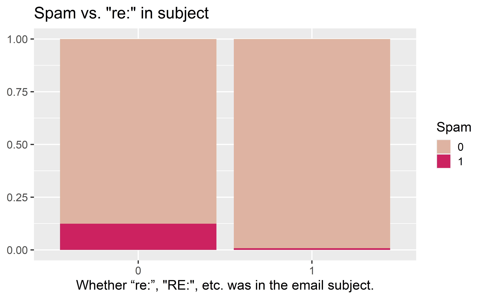
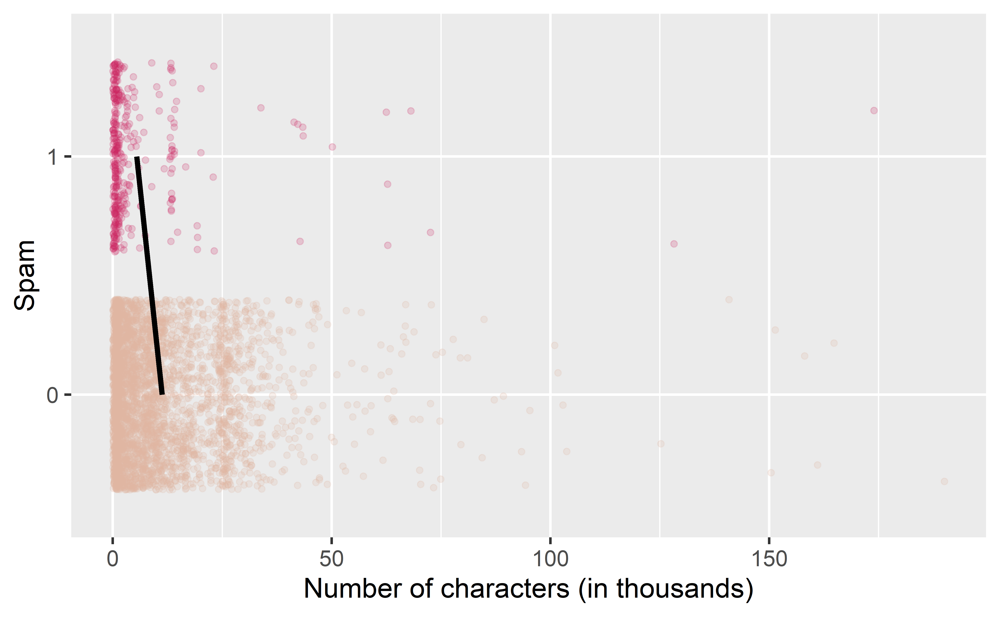
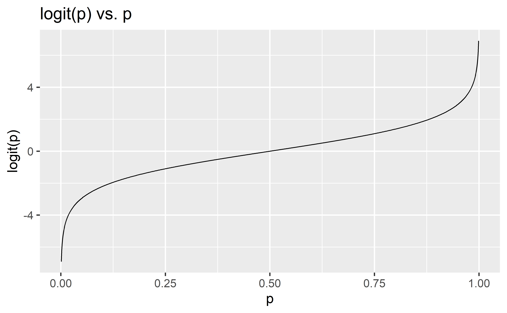
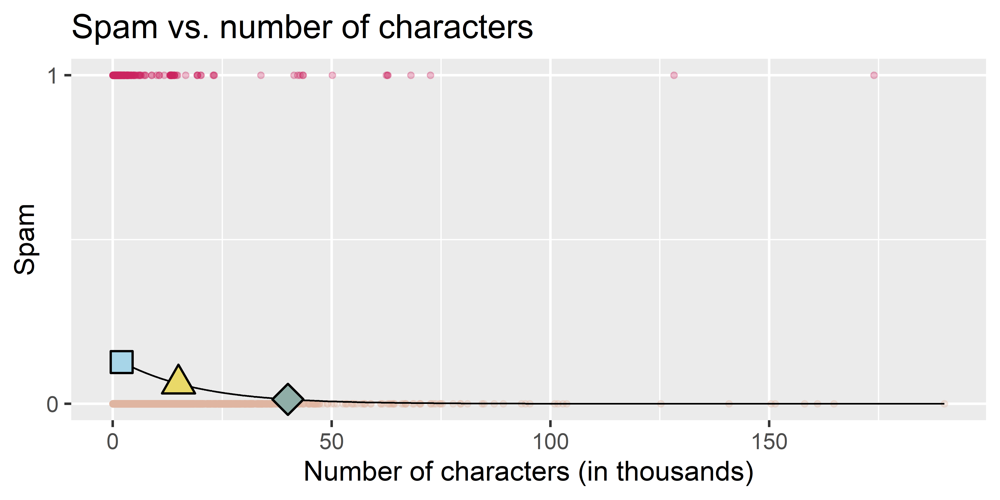

Logistic regression
Data Science in a Box
layout: true
class: middle
Predicting categorical data
Spam filters
.pull-left-narrow[ - Data from 3921 emails and 21 variables on them - Outcome: whether the email is spam or not - Predictors: number of characters, whether the email had “Re:” in the subject, time at which email was sent, number of times the word “inherit” shows up in the email, etc.] .pull-right-wide[ .small[]]
.question[ Would you expect longer or shorter emails to be spam?]
–
.pull-left[] .pull-right[]
.question[ Would you expect emails that have subjects starting with “Re:”, “RE:”, “re:”, or “rE:” to be spam or not?]
–

Modelling spam
- Both number of characters and whether the message has “re:” in the subject might be related to whether the email is spam. How do we come up with a model that will let us explore this relationship?
- For simplicity, we’ll focus on the number of characters (num_char) as predictor, but the model we describe can be expanded to take multiple predictors as well. |
Modelling spam
This isn’t something we can reasonably fit a linear model to – we need something different!

Framing the problem
- We can treat each outcome (spam and not) as successes and failures arising from separate Bernoulli trials
- Bernoulli trial: a random experiment with exactly two possible outcomes, “success” and “failure”, in which the probability of success is the same every time the experiment is conducted
| - Each Bernoulli trial can have a separate probability of success |
|---|
| - We can then use the predictor variables to model that probability of success, \(p_i\) |
- We can’t just use a linear model for \(p_i\) (since \(p_i\) must be between 0 and 1) but we can transform the linear model to have the appropriate range
Generalized linear models
- This is a very general way of addressing many problems in regression and the resulting models are called generalized linear models (GLMs)
| - Logistic regression is just one example |
Three characteristics of GLMs
All GLMs have the following three characteristics:
- A probability distribution describing a generative model for the outcome variable
| 2. A linear model: |
|---|
| 3. A link function that relates the linear model to the parameter of the outcome distribution |
class: middle
Logistic regression
Logistic regression
- Logistic regression is a GLM used to model a binary categorical outcome using numerical and categorical predictors
| - To finish specifying the Logistic model we just need to define a reasonable link function that connects \(\eta_i\) to \(p_i\): logit function |
|---|
| - Logit function: For \(0\le p \le 1\) |
| \[logit(p) = \log\left(\frac{p}{1-p}\right)\] |
Logit function, visualised

Properties of the logit
- The logit function takes a value between 0 and 1 and maps it to a value between \(-\infty\) and \(\infty\)
| - Inverse logit (logistic) function: |
|---|
| - The inverse logit function takes a value between \(-\infty\) and \(\infty\) and maps it to a value between 0 and 1 |
- This formulation is also useful for interpreting the model, since the logit can be interpreted as the log odds of a success – more on this later
The logistic regression model
- Based on the three GLM criteria we have
- \(y_i \sim \text{Bern}(p_i)\)
- \(\eta_i = \beta_0+\beta_1 x_{1,i} + \cdots + \beta_n x_{n,i}\)
- \(\text{logit}(p_i) = \eta_i\)
| - From which we get |
| \[p_i = \frac{\exp(\beta_0+\beta_1 x_{1,i} + \cdots + \beta_k x_{k,i})}{1+\exp(\beta_0+\beta_1 x_{1,i} + \cdots + \beta_k x_{k,i})}\] |
Modeling spam
In R we fit a GLM in the same way as a linear model except we
- specify the model with
logistic_reg() - use
"glm"instead of"lm"as the engine - define
family = "binomial"for the link function to be used in the model
–
spam_fit <- logistic_reg() %>%
set_engine("glm") %>%
fit(spam ~ num_char, data = email, family = "binomial")
tidy(spam_fit)# A tibble: 2 x 5
term estimate std.error statistic p.value
<chr> <dbl> <dbl> <dbl> <dbl>
1 (Intercept) -1.80 0.0716 -25.1 2.04e-139
2 num_char -0.0621 0.00801 -7.75 9.50e- 15Spam model
tidy(spam_fit)# A tibble: 2 x 5
term estimate std.error statistic p.value
<chr> <dbl> <dbl> <dbl> <dbl>
1 (Intercept) -1.80 0.0716 -25.1 2.04e-139
2 num_char -0.0621 0.00801 -7.75 9.50e- 15–
Model:
\[\log\left(\frac{p}{1-p}\right) = -1.80-0.0621\times \text{num_char}\]
P(spam) for an email with 2000 characters
\[\log\left(\frac{p}{1-p}\right) = -1.80-0.0621\times 2\]
–
\[\frac{p}{1-p} = \exp(-1.9242) = 0.15 \rightarrow p = 0.15 \times (1 - p)\]
–
\[p = 0.15 - 0.15p \rightarrow 1.15p = 0.15\]
–
\[p = 0.15 / 1.15 = 0.13\]
.question[ What is the probability that an email with 15000 characters is spam? What about an email with 40000 characters?]
–
.pull-left[] .pull-right[ - .light-blue[2K chars: P(spam) = 0.13] - .yellow[15K chars, P(spam) = 0.06] - .green[40K chars, P(spam) = 0.01]]
.question[ Would you prefer an email with 2000 characters to be labelled as spam or not? How about 40,000 characters?]

class: middle
Sensitivity and specificity
False positive and negative
| Email is spam | Email is not spam | |
|---|---|---|
| Email labelled spam | True positive | False positive (Type 1 error) |
| Email labelled not spam | False negative (Type 2 error) | True negative |
| - False negative rate = P(Labelled not spam | Email spam) = FN / (TP + FN) |
| - False positive rate = P(Labelled spam | Email not spam) = FP / (FP + TN) |
Sensitivity and specificity
| Email is spam | Email is not spam | |
|---|---|---|
| Email labelled spam | True positive | False positive (Type 1 error) |
| Email labelled not spam | False negative (Type 2 error) | True negative |
–
- Sensitivity = P(Labelled spam | Email spam) = TP / (TP + FN)
- Sensitivity = 1 − False negative rate
- Specificity = P(Labelled not spam | Email not spam) = TN / (FP + TN)
- Specificity = 1 − False positive rate
.question[ If you were designing a spam filter, would you want sensitivity and specificity to be high or low? What are the trade-offs associated with each decision? ]